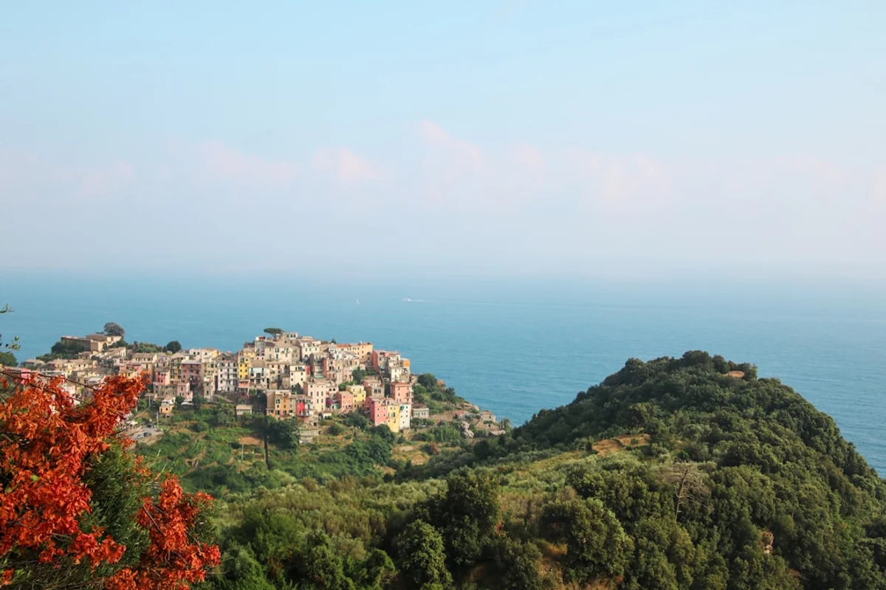
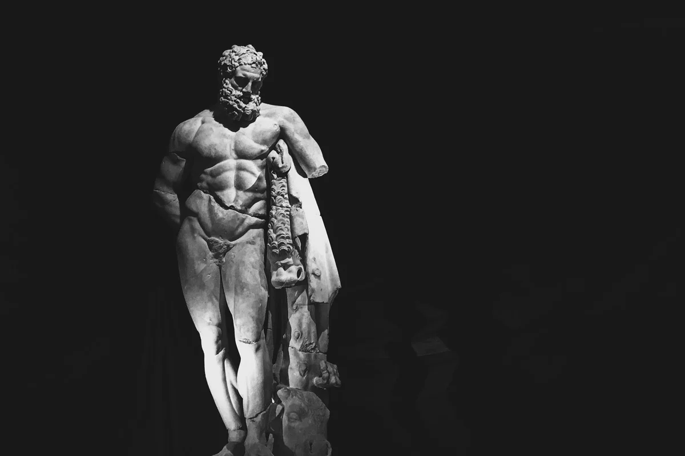

Introduction
Calabria is having a moment. After years of being overshadowed by Sicily to the south and the Amalfi Coast to the north, Italy's toe is finally getting the recognition it deserves, with a surge of international travellers booking flights into Lamezia Terme and road-tripping down the SS18 in search of something rawer, more honest, and considerably less crowded than the usual Italian circuit.
The best places to visit in Calabria Italy are not just beach destinations, though the coastline alone could justify an entire month. This is a region of staggering contrasts: Byzantine frescoes inside mountain monasteries, 'Ndrangheta-era ghost towns slowly being repopulated by foreign remote workers, ancient Greek bronzes sitting in a small-city museum that most tourists have never heard of. Calabria rewards the curious and tests the impatient.
This guide covers ten genuinely unmissable locations, ranging from the famous to the quietly spectacular. Each has been chosen not just for visual impact but for what it reveals about the region's layered, complicated, endlessly fascinating identity.
1. Tropea: The Clifftop Town Everyone Is Talking About
There is a reason Tropea keeps appearing on every 'hidden gems of Italy' list, even though it is no longer remotely hidden. The town sits on a dramatic sandstone cliff above one of the clearest stretches of Tyrrhenian coastline in the entire Mediterranean, and the view from the Santa Maria dell'Isola sanctuary looking back at the pastel-coloured old town is legitimately one of the great visual experiences in southern Italy.
But here is what most visitors miss: Tropea is not just a beach town. The centro storico deserves two to three hours on its own, particularly the Norman Cathedral, which contains a letter written to the town's patron saint asking for protection during World War II bombings. The letter worked. Tropea was largely spared.
The red onion of Tropea (cipolla rossa di Tropea IGP) is also worth taking seriously as a culinary souvenir. It is sweeter than almost any onion grown elsewhere in Europe, and local shops sell it in braids, jams, and preserves. Visit between June and September for the best weather, but come in late May or early October to avoid the peak-season crowds that now genuinely overwhelm the place.
2. Reggio Calabria and the Riace Bronzes: Italy's Most Underrated Museum
If there is a single place in Calabria that deserves more international attention than it currently gets, it is the Museo Nazionale della Magna Grecia in Reggio Calabria. This is where the Riace Bronzes live, and encountering them in person is one of those experiences that recalibrates what you thought you knew about ancient sculpture.
The two warrior statues, recovered from the seabed off Riace in 1972, stand around two metres tall and date to the fifth century BC. The detail is extraordinary: individual eyelashes in ivory and glass paste, silver teeth, copper lips and nipples. They are so anatomically precise and so viscerally present that standing in front of them feels less like visiting a museum and more like interrupting something private.
Reggio itself is often dismissed as a transit point for the ferry to Sicily, which is genuinely unfair. The Lungomare Falcomatà, the seafront promenade, is one of the finest in Italy, with views across the Strait of Messina to Etna on clear days. Museum admission costs around €8, and the building is modern, well-maintained, and rarely crowded.
Insider angle: Most Calabria travel guides mention the Bronzes briefly before moving on. What they rarely say is that the rest of the museum's permanent collection, covering Magna Graecia artefacts from across the region, is equally remarkable and could easily occupy half a day.

3. Scilla: Where the Tyrrhenian Gets Mythological
Scilla is the Charybdis to Sicily's Scylla, or perhaps the other way around depending on which classical source you prefer. Either way, Homer name-checked this exact stretch of coastline in the Odyssey, and standing on the Castello Ruffo promontory at sunset, watching the water swirl between Calabria and Sicily, it is easy to understand why ancient sailors found it terrifying.
Modern Scilla is composed of two distinct neighbourhoods: Chianalea, the old fishing quarter where houses are built directly above the water and boats are stored in ground-floor garages, and Marina Grande, the main beach. Chianalea is one of the most photogenic villages in all of southern Italy and remains remarkably genuine, with local fishermen still bringing in catches of swordfish each summer.
The town is small enough to walk entirely in under two hours, which makes it an excellent day trip from Reggio Calabria (around 25 kilometres north), but the better option is to stay overnight and experience it after the day-trippers have left.
4. Capo Vaticano: The Beach Coast That Rivals the Maldives
South of Tropea, the coastline at Capo Vaticano offers something rarer than a beautiful beach: a beautiful beach that requires a little effort to reach. The turquoise water here is the product of clean currents, white sand, and an almost total absence of river runoff, which means visibility below the surface can extend to 15 metres or more on calm days.
The most accessible coves are Grotticelle and Tono, both reachable via steep paths from the clifftop road. Neither has been overdeveloped, and outside of August the ratio of tourists to square metre of sand remains entirely civilised. Snorkelling equipment rented locally reveals posidonia meadows, octopus, and on lucky mornings, loggerhead turtles.
This part of the Vibo Valentia province is also where Calabria's swordfish (pesce spada) tradition is strongest. The traditional method of hunting, using a tall-masted boat called a feluche, has largely disappeared, but the fish remains central to every local menu between June and September.

5. Gerace: The Byzantine Hill Town Most Visitors Never Find
Gerace sits on a near-vertical sandstone spur in the Ionian hinterland at around 500 metres above sea level, and it may be the most complete medieval town in Calabria that the average tourist has never heard of. Founded by Byzantine refugees fleeing Arab raids on the coast in the ninth century, it reached its peak under the Normans and has been in slow, dignified decline ever since.
The Norman Cathedral here is the largest in Calabria, and its interior reuses twenty ancient granite and marble columns salvaged from a Greek temple at nearby Locri, giving the space an extraordinary layered quality. Byzantine capitals sit beneath Norman arches while twentieth-century restoration work peeks through in the corners.
Gerace has fewer than 3,000 residents today, and significant parts of the old town are technically uninhabited. Walking its upper lanes in the late afternoon, past locked palazzi and stone churches where cats sleep in the doorways, produces a very specific kind of melancholy that is genuinely hard to find anywhere else in Italy. There is a small selection of good agriturismi within fifteen minutes of town; staying for at least one night is strongly recommended.
6. Locri Epizephirii: Ancient Greece on the Ionian Coast
For anyone interested in Magna Graecia, the archaeological park at Locri Epizephirii is a genuinely important site that receives a fraction of the attention given to Pompeii or Agrigento. Founded around 680 BC, ancient Locri was one of the great Greek colonial cities of the western Mediterranean and the first Greek city-state known to have had a written code of laws, established under the lawgiver Zaleucus.
The site today covers a large area along the Ionian coast near the modern town of Locri. The on-site museum holds thousands of pinakes, small terracotta votive plaques depicting scenes of the underworld and religious ritual, which are remarkable in both their quantity and their artistic quality. Entrance to the park costs around €5 and includes museum access.
Locri Epizephirii pairs naturally with a visit to Gerace (15 kilometres inland), making for a full day combining Greek antiquity with Byzantine-Norman architecture.
7. Aspromonte National Park: The Calabria That Tourists Forget Exists
Most visitors to Calabria never leave the coast, which means the Aspromonte National Park remains one of the most genuinely wild and unvisited protected areas in all of Italy. This is the rugged mountain massif that forms the toe of the Italian boot, rising to 1,955 metres at Montalto and covering over 64,000 hectares of forest, gorge, and upland plateau.
The park contains some of the most dramatic scenery in the Mediterranean, including the fiumare, the distinctive wide riverbeds that run dry in summer and rage with boulders and white water after autumn rains. The village of Gambarie, at around 1,300 metres, serves as the main base for hikers and in winter becomes a modest ski resort, one of the very few in the deep south of Italy.
The contrarian truth about Aspromonte: The park has historically suffered from a reputation problem, largely due to its association with the 'Ndrangheta and the kidnappings that occurred here in the 1970s and 1980s. That era is long over, but the stigma has lingered in a way that has kept tourist numbers low. For adventurous travellers, this is nothing but good news: marked trails, zero crowds, and a landscape that feels genuinely untouched.
8. Pentedattilo: The Ghost Village Under the Five-Fingered Rock
Pentedattilo takes its name from the Greek words for 'five fingers', a reference to the extraordinary pentagonal rock formation that looms over the ruins of the village below. The original settlement, clinging to the sheer cliff face at 250 metres, was abandoned following a catastrophic earthquake in 1783 and subsequent population transfers to the valley below.
What remains is one of the most visually arresting ghost towns in southern Europe: crumbling stone houses, a roofless church, and narrow lanes that end abruptly where the cliff becomes too steep to continue. A small community of artists and seasonal residents has partially reoccupied the village in recent decades, and there is now a tiny museum and a summer cultural programme that brings theatre and music to the ruins.
The village is around 18 kilometres north-east of Reggio Calabria and easily combined with a visit to the city. The approach road is narrow and steep but navigable with a standard car. Arriving in the late afternoon, when the rock turns amber and the coastal plain below disappears into haze, is timing the visit correctly.
9. Sila National Park: Lakes, Forests, and Calabria's Highland Soul
Where Aspromonte is rugged and edgy, the Sila National Park is generous and welcoming, a vast plateau of pine and beech forest at around 1,200 metres that covers the central hinterland of Calabria. The three main towns of San Giovanni in Fiore, Camigliatello Silano, and Lorica offer proper infrastructure for visitors, including accommodation, good restaurants, and marked hiking and cycling trails.
The Sila is where Calabrian food culture finds some of its most distinctive expression. The capicollo (cured pork neck), soppressata, and aged pecorino produced here are among the finest in southern Italy. The mushrooms harvested from Sila forests each autumn, particularly porcini and ovoli, attract foragers from across the region.
The three artificial lakes created by hydroelectric dams in the mid-twentieth century, Lago Arvo, Lago Ampollino, and Lago Cecita, are now genuinely beautiful and support watersports, cycling, and lakeside picnics. In summer they offer a cool alternative to the coastal heat; in winter they freeze at the edges and the surrounding forests accumulate real snow.
10. Pizzo Calabro: 'Nduja, Tartufo, and the Murat Castle
Pizzo Calabro earns its place on this list for three reasons that have nothing to do with each other but combine to make the town unexpectedly compelling.
First, history: the Castello Aragonese here is where Joachim Murat, Napoleon's flamboyant brother-in-law and King of Naples, was captured and executed by firing squad in 1815. His final hours, spent writing letters in the castle before being shot in the same courtyard, are documented in a small museum inside.
Second, food: Pizzo is the birthplace of the tartufo di Pizzo, a chocolate and hazelnut ice cream confection encased in cocoa powder that has since been copied across Italy but remains best eaten here, ideally at Bar Gelateria Ercole on the main piazza, where the recipe has remained unchanged since the 1950s.
Third, geography: the town sits on a high promontory with a small marina below and a historic centre above, compact enough to explore entirely on foot in a few hours but with enough texture to reward a longer stay. The combination of Bourbon history, artisan gelato culture, and coastal scenery makes Pizzo one of the most satisfying single-day stops on any Calabria itinerary.
How to Plan a Calabria Road Trip Around These Destinations
Calabria is a long, narrow region, approximately 250 kilometres from the northern border with Basilicata down to Reggio Calabria at the tip, and the road network is a mixed experience. The A2 Autostrada del Mediterraneo runs the length of the region and is generally efficient; secondary roads into the mountains and along the coast range from perfectly maintained to genuinely adventurous.
A logical 10-day itinerary might look like this:
- Days 1 to 2: Reggio Calabria, including the Riace Bronzes and Pentedattilo
- Day 3: Scilla and then north to Pizzo Calabro
- Days 4 to 5: Tropea and Capo Vaticano
- Days 6 to 7: Sila National Park, based in Camigliatello Silano
- Days 8 to 9: Gerace and Locri Epizephirii via the Ionian coast
- Day 10: Aspromonte or a return to the coast before departure
Flying into Lamezia Terme Airport (SUF) is the most practical entry point for covering the Tyrrhenian coast and Sila. Reggio Calabria Airport (REG) makes more sense if the Ionian coast and Aspromonte are the priority. A rental car is non-negotiable: public transport exists but serves local commuters rather than tourist itineraries.
Budget reality check: Calabria remains one of the most affordable regions in Italy for travellers. A good agriturismi double room typically costs between €60 and €100 per night including breakfast. A full lunch with wine at a local trattoria rarely exceeds €25 per person. Museum entrance fees are low across the board, rarely exceeding €8.
Final Thoughts
Calabria is the Italy that Italy forgot to market, and for now that remains very much in the traveller's favour. The beaches are real, the history is layered in ways that even well-travelled visitors find surprising, and the food is among the most distinctive and honest in the entire peninsula. The 'Ndrangheta clichés that still circulate in northern European newspapers bear essentially no relation to the daily experience of visiting the region.
What Calabria requires is curiosity and a willingness to move at a pace that the landscape dictates rather than an itinerary permits. The best moments here tend to arrive unscheduled: a fisherman in Chianalea who insists on showing his catch, a roadside stall selling bergamot marmalade, a Byzantine fresco in a church that was not on the plan but whose door happened to be open.
If this guide has helped clarify the region's possibilities, sharing it with someone who is weighing up whether Calabria is worth the detour would be the best possible use of it.
Frequently Asked Questions
What is the best time of year to visit Calabria Italy?
Late May to mid-June and September to early October offer the ideal combination of warm sea temperatures, manageable crowds, and pleasant hiking conditions in the national parks. July and August are peak season with high prices and intense heat; the coast can feel genuinely overcrowded in these months, particularly around Tropea. Winter is mild on the coast but cold in the mountains, where the Sila Park offers basic but functional skiing.
Is Calabria safe for tourists?
Yes, Calabria is safe for tourists. The region's association with organised crime (the 'Ndrangheta) refers to a criminal network that operates largely invisibly and targets neither tourists nor foreign visitors. The experience of travelling in Calabria is that of a warm, hospitable, and very safe region. Standard precautions applicable anywhere in southern Europe apply, but there is no elevated risk for travellers.
Do you need a car to travel around Calabria?
A rental car is strongly recommended. While trains connect the main coastal cities (Reggio Calabria, Lamezia Terme, Pizzo Calabro) with reasonable frequency, accessing the interior villages, national parks, and many of the best beaches requires private transport. Rural bus services exist but are designed for local commuters and do not cover most tourist destinations at useful times.
What food is Calabria most famous for?
Calabria is most famous for its use of red chilli pepper ('nduja, the spreadable spiced pork salami; peperoncino in almost every dish), its exceptional cured meats (capicollo, soppressata, 'nduja di Spilinga), its Tropea red onion (IGP certified), bergamot from the Reggio Calabria coast (used in Earl Grey tea and perfumery), swordfish prepared in the traditional Scilla and Bagnara style, and the tartufo di Pizzo ice cream dessert.
How many days do you need to visit Calabria properly?
A minimum of seven days is needed to cover the highlights of both the Tyrrhenian and Ionian coasts along with a meaningful visit to either the Sila or Aspromonte national parks. Ten to fourteen days allows a genuinely unhurried exploration of the region, including lesser-known inland towns like Gerace, Pentedattilo, and the villages of the Sila plateau. A weekend or three-day trip is best focused on a single area, either the Tropea to Pizzo Calabro Tyrrhenian coast or the Reggio Calabria to Locri Ionian corridor.